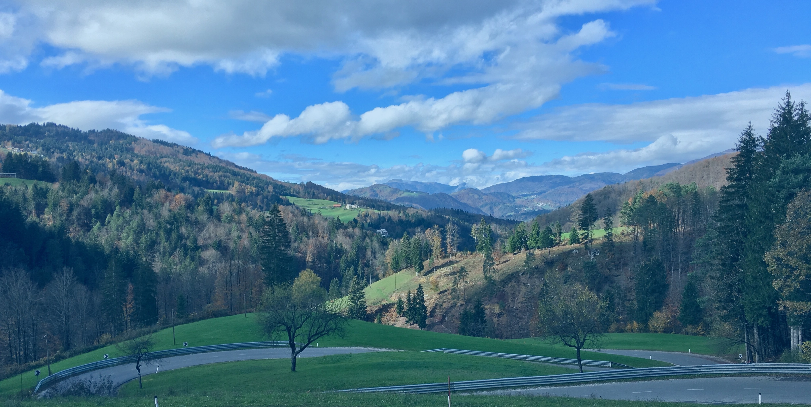

I am currently a Marie Skłodowska-Curie Individual Research Fellow at the Faculty of Mathematics and Physics at the University of Ljubljana.
My research is in programming language theory, where I am particularly interested in- dependent and refinement types,
- computational effects (in particular, algebraic effects and effect handlers),
- programming languages that include the above,
- the use of such languages for writing verified software, and
- the (category theoretic) semantics of such languages.
News
- A new draft Asynchronous effects (jww Matija Pretnar) about asynchronous programming in the context of algebraic effects is now available.
- In April 2020, the paper Runners in action (jww Andrej Bauer) will appear at ESOP 2020.
- In July 2020, I will be co-organising a Dagstuhl seminar on Scalable Handling of Effects with Amal Ahmed, Sam Lindley, and Andreas Rossberg.
Contact
- Address: Fakulteta za matematiko in fiziko, Jadranska 21, 1000 Ljubljana, Slovenia
- Office: 507
- Tel: +386 1 4766 607
- Departmental webpage: https://www.fmf.uni-lj.si/en/directory/48529/
- E-mail: danel.ahman@fmf.uni-lj.si
Employment
- Marie Skłodowska-Curie Individual Research Fellow, Faculty of Mathematics and Physics at University of Ljubljana, Slovenia (October 2019 - present)
- Postdoctoral Researcher, Faculty of Mathematics and Physics at University of Ljubljana, Slovenia (October 2018 - September 2019)
- Consulting Researcher, Microsoft Research Redmond, USA (May 2019 - June 2019)
- Postdoctoral Researcher, Prosecco Team at Inria Paris, France (April 2017 - September 2018)
- Research Intern, Microsoft Research Redmond, USA (May 2016 - August 2016)
- Research Intern, Microsoft Research Silicon Valley, USA (September 2014 - November 2014)
- Research Intern, Institute of Cybernetics, Estonia (March 2011 - June 2011, June 2011 - September 2011)
- Software Development Intern, Active Systems OÜ, Estonia (summers 2007 - 2010)
Education
-
2012 - 2017, PhD in Theoretical Computer Science, LFCS, School of Informatics, University of Edinburgh
Thesis topic: Fibred Computational Effects
Supervisor: Gordon Plotkin
Examiners: Paul Blain Levy (external) and James Cheney (internal) -
2011 - 2012, MPhil in Advanced Computer Science (with Distinction), Computer Laboratory, University of Cambridge
Dissertation topic: Computational effects, algebraic theories and normalization by evaluation
Supervisor: Sam Staton - 2007 - 2010, BSc in Informatics (Cum Laude), Tallinn University of Technology
Publications
Drafts
- D. Ahman, M. Pretnar. Asynchronous effects
Manuscript, submitted. March, 2020. (pdf , Æff language , Agda formalisation) - N. Swamy, A. Rastogi, A. Fromherz, D. Merigoux, D. Ahman, G. Martínez.
SteelCore: An Extensible Concurrent Separation Logic for Effectful Dependently Typed Programs
Manuscript, submitted. March, 2020.
Conference and journal papers
- D. Ahman, A. Bauer. Runners in action
In P. Müller, ed., Proc. of 29th Europ. Symp. on Programming, ESOP 2020 (Dublin, April 2020), to appear. (pdf , Haskell-Coop , Coop) - D. Ahman, T. Uustalu. Decomposing comonad morphisms
In M. Roggenbach, A. Sokolova, eds., Proc. of 8th Conf. Algebra and Coalgebra in Computer Science, CALCO 2019 (London, June 2019), v. 139 of Leibniz Int. Proc. in Inf., pp. 14:1-14:19, Dagstuhl Publishing, 2019. (doi link) - K. Maillard, D. Ahman, R. Atkey, G. Martinez, C. Hritcu, E. Rivas, E. Tanter. Dijkstra Monads for All
Proc. ACM Program. Lang., v. 3, issue ICFP, article 104, 2019. (doi link , pdf , F* code, Coq code) - G. Martínez, D. Ahman, V. Dumitrescu, N. Giannarakis, C. Hawblitzel, C. Hriţcu, M. Narasimhamurthy, Z. Paraskevopoulou, C. Pit-Claudel, J. Protzenko, T. Ramananandro, A. Rastogi, N. Swamy. Meta-F*: Proof Automation with SMT, Tactics, and Metaprograms
In L. Caires, ed., Proc. of 28th Europ. Symp. on Programming, ESOP 2019 (Prague, April 2019), v. 11423 of Lect. Notes in Comput. Sci., pp. 30-59. Springer, 2019. (doi link , pdf , paper page) - D. Ahman. Handling Fibred Algebraic Effects
Proc. ACM Program. Lang., v. 2, issue POPL, article 7, 2018. (doi link , pdf , Agda code) - D. Ahman, C. Fournet, C. Hriţcu, K. Maillard, A. Rastogi, N. Swamy. Recalling a Witness: Foundations and Applications of Monotonic State
Proc. ACM Program. Lang., v. 2, issue POPL, article 65, 2018. (doi link , pdf , paper page) - D. Ahman, T. Uustalu. Taking Updates Seriously
In R. Eramo, M. Johnson, eds., Proc. of 6th Int. Wksh. on Bidirectional Transformations, BX 2017 (Uppsala, April 2017), v. 1827 of CEUR Workshop Proceedings, pp. 59-73. CEUR-WS, 2017. (pdf) - D. Ahman, C. Hriţcu, K. Maillard, G. Martínez, G. Plotkin, J. Protzenko, A. Rastogi, and N. Swamy. Dijkstra Monads for Free
In A. Gordon, ed., Proc. of 44th ACM SIGPLAN Symposium on Principles of Programming Languages, POPL 2017 (Paris, January 2017), pp. 515-529. ACM, 2017. (doi link , pdf , paper page) - D. Ahman, N. Ghani, G. Plotkin. Dependent Types and Fibred Computational Effects
In B. Jacobs, C. Löding, eds., Proc. of 19th Int. Conf. on Foundations of Software Science and Computation Structures, FoSSaCS 2016 (Eindhoven, April 2016), v. 9634 of Lect. Notes in Comput. Sci., pp. 36-54. Springer, 2016. (doi link , pdf © Springer) - D. Ahman, T. Uustalu. Directed containers as categories
In R. Atkey, N. Krishnaswami, eds., Proc. of 6th Wksh. on Mathematically Structured Functional Programming, MSFP 2016 (Eindhoven, April 2016), v. 207 of Electron. Proc. in Theor. Comput. Sci., pp. 89-98. Open Publishing Assoc., 2016. (doi link , pdf) - D. Ahman, T. Uustalu. Coalgebraic update lenses
In B. Jacobs, A. Silva, S. Staton, eds., Proc. of 30th Conf. on Mathematical Foundations of Programming Semantics, MFPS XXX (Ithaca, NY, June 2014), Electron. Notes in Theor. Comput. Sci., v. 308, pp. 25-48. Elsevier, 2014. (doi link , pdf © Elsevier) - D. Ahman, T. Uustalu. Update Monads: Cointerpreting Directed Containers
In R. Matthes, A. Schubert, eds., Post-proc. of the 19th Meeting "Types for Proofs and Programs", TYPES 2013, Leibniz International Proceedings in Informatics, Schloss Dagstuhl – Leibniz-Zentrum für Informatik, Dagstuhl Publishing, pp. 1--23, 2014. (doi link , pdf) - D. Ahman, S. Staton. Normalization by evaluation and algebraic effects
In D. Kozen, M. Mislove, eds., Proc. of 29th Conf. on Mathematical Foundations of Programming Semantics, MFPS XXIX (New Orleans, LA, June 2013), v. 298 of Electron. Notes in Theor. Comput. Sci., pp. 51-69, Elsevier, 2013. (doi link , pdf © Elsevier , Agda code) - D. Ahman, T. Uustalu. Distributive laws of directed containers
Progress in Informatics, v. 10, pp. 3-18, 2013. (doi link , pdf) - D. Ahman, J. Chapman, T. Uustalu. When is a Container a Comonad?
Logical Methods in Computer Science, v. 10, n. 3, article 14, 2014. (doi link , pdf)
Conference version in L. Birkedal, ed., Proc. of 15th Int. Conf. on Foundations of Software Science and Computation Structures, FoSSaCS 2012 (Tallinn, March 2012), v. 7213 of Lect. Notes in Comput. Sci., pp. 74-88, Springer, 2012. (doi link , pdf © Springer , Agda code) - D. Ahman, M. Kääramees. Constraint-Based Heuristic On-line Test Generation from Non-deterministic I/O EFSMs
In Alexander K. Petrenko and Holger Schlingloff, eds., Proc. of 7th Wksh. on Model-Based Testing, MBT 2012 (Tallinn, March 2012), Electron. Proc. in Theor. Comput. Sci., 80, pp. 115–129, Open Publishing Assoc., 2012. (doi link , pdf)
Dissertations
- D. Ahman. Fibred Computational Effects
PhD thesis, LFCS, School of Informatics, University of Edinburgh, 2017. (pdf , arXiv mirror , ERA mirror , abstract in JFP) - D. Ahman. Computational effects, algebraic theories and normalization by evaluation
MPhil dissertation, Computer Laboratory, University of Cambridge, 2012. (pdf)
Peer-reviewed extended abstracts
- K. Maillard, D. Ahman, R. Atkey, G. Martinez, C. Hritcu, E. Rivas, E. Tanter. Dijkstra Monads for All
25th Meeting "Types for Proofs and Programs", TYPES 2019 (Oslo, June 2019) - G. Martínez, D. Ahman, V. Dumitrescu, N. Giannarakis, C. Hawblitzel, C. Hriţcu, M. Narasimhamurthy, Z. Paraskevopoulou, C. Pit-Claudel, J. Protzenko, T. Ramananandro, A. Rastogi, N. Swamy. ML as a Tactic Language, Again
2018 ACM SIGPLAN ML Family Workshop, ML 2018 (St Louis (MO), September 2018) - D. Ahman, C. Fournet, C. Hritcu, K. Maillard, A. Rastogi, N. Swamy. Recalling a Witness
6th ACM SIGPLAN Workshop on Higher-Order Programming with Effects, HOPE 2017 (Oxford, September 2017) - D. Ahman. Handling fibred algebraic effects
6th ACM SIGPLAN Workshop on Higher-Order Programming with Effects, HOPE 2017 (Oxford, September 2017) - D. Ahman, G. Plotkin. Refinement Types for Algebraic Effects
21st Meeting "Types for Proofs and Programs", TYPES 2015 (Tallinn, May 2015) (pdf) - D. Ahman, T. Uustalu. From Stateful to Stackful Computation
3rd ACM SIGPLAN Workshop on Higher-Order Programming with Effects, HOPE 2014 (Gothenburg, August 2014) - D. Ahman, T. Uustalu. Coalgebraic update lenses
20th Meeting "Types for Proofs and Programs", TYPES 2014 (Paris, May 2014) - D. Ahman. Refinement Types and Algebraic Effects
2nd ACM SIGPLAN Workshop on Higher-Order Programming with Effects, HOPE 2013 (Boston, MA, September 2013) - D. Ahman, T. Uustalu. Update Monads: Cointerpreting Directed Containers
19th Meeting "Types for Proofs and Programs", TYPES 2013 (Toulouse, April 2013) - D. Ahman, T. Uustalu. Distributive laws of directed containers
11th Int. Wksh. on Coalgebraic Methods in Comput. Sci., CMCS '12 (Tallinn, March/April 2012)
Awards and funding
- 2019, Horizon 2020 Marie Skłodowska-Curie Individual Fellowship (to be held October 2019 - September 2021, press release)
- 2018, 1st prize at the Estonian Ministry of Education and Research dissertations competition (PhD thesis, link)
- 2015, PhD scholarship from the Archimedes Foundation and the Estonian Ministry of Education and Research (Scholarship program Kristjan Jaak, for 2015-2016)
- 2013, Institute of Cybernetics paper of the year 2012 (link)
- 2013, Travel scholarship to participate at the ICFP 2013 conference (ACM SIGPLAN)
- 2013, Supplementary scholarship (Estonian Students Fund in USA, for 2013-2014)
- 2013, Travel scholarship to participate at the MFPS XXIX and LICS 2013 conferences (Scholarship program Kristjan Jaak)
- 2012, Supplementary scholarship (Estonian Students Fund in USA, for 2012-2013)
- 2012, PhD scholarship from the University of Edinburgh (Principal's Career Development Scholarship, for 2012-2015)
- 2012, 3rd prize at the Estonian Ministry of Education and Research dissertations competition (MPhil dissertation, link)
- 2012, Estonian Academy of Sciences dissertation award (MPhil dissertation, link)
- 2012, Google prize for the best research dissertation in MPhil program Advanced Computer Science, Computer Laboratory, University of Cambridge
- 2012, Citrix prize for the best student in MPhil program Advanced Computer Science, Computer Laboratory, University of Cambridge
- 2012, Nominee for best paper award at the ETAPS 2012 conference
- 2010, Estonian President’s recognition of top-ranking graduates
- 2008, Tallinn University of Technology Rector's 100 best starting students award
Community service
Program committees
- 36th International Conference on Mathematical Foundations of Programming Semantics, MFPS 2020 (Paris, June 2020)
- Logical Frameworks and Meta-Languages: Theory and Practice, LFMTP 2019 (Vancouver, June 2019)
- 46th ACM SIGPLAN Symposium on Principles of Programming Languages, POPL 2019 (Lisbon, January 2019)
- 7th ACM SIGPLAN Workshop on Higher-Order Programming with Effects, HOPE 2018 (St Louis, September 2018)
- 7th Workshop on Mathematically Structured Functional Programming, MSFP 2018 (Oxford, July 2018)
External review committees
- 25th ACM SIGPLAN International Conference on Functional Programming, ICFP 2020 (Jersey City, August 2020)
Organising committees
- 29th International Conference on Computer Science Logic, CSL 2021 (Ljubljana, January 2021)
- Dagstuhl seminar on Scalable Handling of Effects (Dagstuhl, July 2020).
Course and seminar organisation
- Between November 2013 and April 2014, I co-organised Conor McBride's course on Dependently typed metaprogramming with Sam Lindley.
- Between November 2013 and April 2014, I co-organised a reading group on Homotopy Type Theory with James McKinna.
- Between August 2013 and October 2013, I organised LFCS's Lab Lunch.
Media coverage
- In December 2017, I was interviewed by Jean Yang for the People of Programming Languages interview project among 14 other great PL people.
Teaching
Program verification with F*
- In November 2019, I delivered a guest lecture and accompanying lab sessions based on this course at the Tallinn University of Technology.
- In March 2019, I delivered a special lecture based on this course at the 24th Estonian Winter School in Computer Science.
- In December 2018, I delivered a guest lecture and accompanying lab sessions based on this course at the Tallinn University of Technology.
- In August 2018, I delivered this course at the EUTypes 2018 Summer School.
- In May 2018, I delivered the monotonic state part of this course at the EPIT 2018 Spring School.
Functional Programming (School of Informatics, University of Edinburgh) (FP)
- In autumn 2015, I tutored one tutorial group.
- In autumn 2013, I tutored two tutorial groups.
- In autumn 2012, I tutored one tutorial group.
Object-Oriented Programming (School of Informatics, University of Edinburgh) (INF1-OP)
- In spring 2015, I tutored three tutorial groups.
- In spring 2014, I tutored two tutorial groups.
- In spring 2013, I was a lab demonstrator for one group.
Logic Programming (School of Informatics, University of Edinburgh) (LP)
- In autumn 2015, I tutored two tutorial groups.
- In autumn 2013, I tutored one tutorial group and marked students' coursework.
- In autumn 2012, I tutored two tutorial groups and marked students' coursework.
Computation and Logic (School of Informatics, University of Edinburgh) (CL)
- In autumn 2013, I tutored one tutorial group and marked students' coursework.
Language Semantics and Implementation (School of Informatics, University of Edinburgh) (LSI)
- In spring 2013, I tutored one tutorial group.
Logic in Computer Science (Institute of Cybernetics, Tallinn University of Technology) (ITT0040)
- In autumn 2011, I stood in for Prof. Tarmo Uustalu in 2 lectures and 2 practical sessions.
Operating Systems and Network Administrating (Department of CS, Tallinn University of Technology) (ITV0050)
- In spring 2011, I was one of the lecturers in the operating systems and network administering course at the Tallinn University of Technology. I gave talks and practice/exercise sessions on software packaging and package management, filesystems and (remote) access to them, virtual machines and their technology in desktop and server environments.
Talks
- Program verification with F*
Invited guest lecture, Tallinn University of Technology, 20.11.2018 (lecture materials) - Runners in action
Software Science Departmental Seminar, Tallinn University of Technology, 18.11.2019 (abstract) - Runners in action
Seminar za temelje matematike in teoretično računalništvo, University of Ljubljana, 07.11.2019 (abstract) - Interacting with the external world using comodels (aka runners)
CHoCoLa meeting, ENS Lyon, 17.10.2019 (abstract , slides) - Interacting with the external world using comodels (aka runners)
Gallinette seminar, INRIA Nantes, 14.10.2019 - Comodels as a gateway for interacting with the external world
Research in Software Engineering (RiSE) seminar, Microsoft Research Redmond, 15.05.2019 (slides) - Comodels as a gateway for interacting with the external world
NII Shonan Seminar no. 146 on Programming and Reasoning with Algebraic Effects and Effect Handlers, 28.03.2019 (slides) - Comodels as a gateway for interacting with the external world
Seminar za temelje matematike in teoretično računalništvo, University of Ljubljana, 21.03.2019 (abstract) - Program verification with F*
Special lecture, Estonian Winter School in Computer Science, 08.03.2019 (slides) - Program verification with F*
Invited guest lecture, Tallinn University of Technology, 12.12.2018 (lecture materials) - Directed Containers
Seminar za temelje matematike in teoretično računalništvo, University of Ljubljana, 11.10.2018 - A fibrational view on computational effects
Mathematics and theoretical computing seminar, University of Ljubljana, 31.05.2018 (slides) - Embracing monotonicity in F*
Software Science Departmental Seminar, Tallinn University of Technology, 12.02.2018 (slides) - Embracing monotonicity in F*
ICE-TCS Seminar, Reykjavík University, 29.01.2018 (slides) - Leveraging monotonic state in F*
EUTypes 2018 Working Meeting, Radboud University Nijmegen, 23.01.2018 (slides) - Recalling a Witness: Foundations and Applications of Monotonic State
45th ACM SIGPLAN Symposium on Principles of Programming Languages (POPL 2018), 12.01.2018 (slides) - Handling Fibred Algebraic Effects
45th ACM SIGPLAN Symposium on Principles of Programming Languages (POPL 2018), 10.01.2018 (slides) - A fibrational view on computational effects
LFCS Seminar, University of Edinburgh, 28.11.2017 (abstract , slides) - Directed containers, what are they good for?
CLAP Scotland, University of Edinburgh, 20.11.2017 (abstract) - A fibrational view on computational effects
PLS Seminar, IT University of Copenhagen, 13.11.2017 - Recalling a Witness: Foundations and Applications of Monotonic State
6th ACM SIGPLAN Workshop on Higher-Order Programming with Effects (HOPE 2017), 03.09.2017 (slides) - Handling Fibred Algebraic Effects
6th ACM SIGPLAN Workshop on Higher-Order Programming with Effects (HOPE 2017), 03.09.2017 (slides) - Recall for free: preorder-respecting state monads in F*
Prosecco Seminar, Inria Paris, 12.04.2017 - Recall for free: preorder-respecting state monads in F*
Programming Languages Interest Group meeting, University of Edinburgh, 13.10.2016 (slides) - Recall for free: preorder-respecting state monads in F*
EUTypes WG meeting, NOVA University of Lisbon, 5.10.2016 (slides) - Recall for free: preorder-respecting state monads in F*
End of internship talk, Microsoft Research, Redmond, WA, 15.08.2016 - Dependent Types and Fibred Computational Effects
19th International Conference on Foundations of Software Science and Computation Structures (FoSSaCS 2016), Eindhoven, 04.04.2016 (slides) - When is a Container a Comonad?
Category Theory Seminar, University of Edinburgh, 16.03.2016 - Dependent Types and Fibred Computational Effects
Logic and Semantics Seminar, University of Cambridge, 22.01.2016 (abstract , slides) - Dependent types and fibred computational effects
Theory Seminar, University of Dundee, 11.12.2015 - Dependent types and fibred computational effects
Estonian-Finnish Logic Meeting, Rakvere, 15.11.2015 - Basic Category Theory for CS graduate students
LFCS PhD Lunch Seminars, 29.10.2015 - Dependent types and fibred computational effects
Scottish Programming Language Seminar, Edinburgh, 21.10.2015 (abstract) - Dependent types and fibred computational effects
Estonian Computer Science Theory Days, Jõeküla, 3.10.2015 (abstract) - Dependently-typed CBPV (and EEC) and its fibred adjunction models
Computer Science Theory Seminar, Institute of Cybernetics, 28.05.2015 (abstract) - Refinement types for algebraic effects
21st Meeting "Types for Proofs and Programs", 20.05.2015 (slides) - Refinement types for algebraic effects
LFCS Lab Lunch, University of Edinburgh, 05.05.2015 - Coalgebraic update lenses
Mathematical Foundations for Programming Semantics (MFPS XXX), 12.06.2014 - Update lenses
Programming Languages Interest Group meeting, University of Edinburgh, 6.06.2014 - Basic Category Theory for CS graduate students
LFCS PhD Lunch Seminars, 26.03.2014 - A propositional refinement type system for algebraic effects
Computer Science Theory Seminar, Institute of Cybernetics, 10.03.2014 - Update monads
19th Estonian Winter School in Computer Science, 05.03.2014 (slides) - A propositional refinement type system for algebraic effects
Programming Languages Interest Group meeting, University of Edinburgh, 27.01.2014 - Refinement Types and Algebraic Effects
2nd ACM SIGPLAN Workshop on Higher-Order Programming with Effects (HOPE 2013), 28.09.2013 (slides) - An algebraic perspective on behavioral specifications in effectful languages
Programming languages and semantics seminar, Microsoft Research Redmond, 01.07.2013 (slides) - Normalization by Evaluation and Algebraic Effects
Mathematical Foundations for Programming Semantics (MFPS XXIX), 23.06.2013 - Normalization by Evaluation and Algebraic Effects
LFCS Seminar, University of Edinburgh, 11.06.2013 - Normalization by Evaluation and Algebraic Effects
MSP Group Away Day on Isle of Arran, 05.06.2013 - Update monads: cointerpreting directed containers
19th Meeting "Types for Proofs and Programs", 23.04.2013 (slides) - Towards refined notions of computation: multisorted algebras and algebraic effects
18th Estonian Winter School in Computer Science, 06.03.2013 (abstract) - Towards more refined notions of computation: the global state example
Computer Science Theory Seminar, Institute of Cybernetics, 20.12.2012 (abstract , slides) - Normalization by evaluation for a language with algebraic effects (and their handlers)
Scottish Programming Languages Seminar, University of Strathclyde, 06.12.2012 (slides) - Computational effects, algebraic theories and normalization by evaluation
Computer Science Theory Seminar, Institute of Cybernetics, 05.07.2012 (abstract) - Containers, Comonads and Distributive Laws
Semantics Lunch, University of Cambridge, 25.06.2012 (abstract) - Computational effects, algebraic theories and normalization by evaluation
MPhil project report presentations, University of Cambridge, 29.05.2012, (slides) - When is a Container a Comonad?
15th International Conference on Foundations of Software Science and Computation Structures (FoSSaCS 2012), 28.03.2012 (slides) - When is a Container a Comonad?
Estonian Computer Science Theory Days at Kubija, 29.01.2012 (abstract) - When is a Container a Comonad?
Lab Lunch, University of Birmingham, 13.12.2011 (abstract) - When is a Container a Comonad?
Functional Programming Lab Seminars, University of Nottingham, 02.12.2011 (abstract) - When is a Container a Comonad?
Computer Science Theory Seminar, Institute of Cybernetics, 22.09.2011 (abstract)